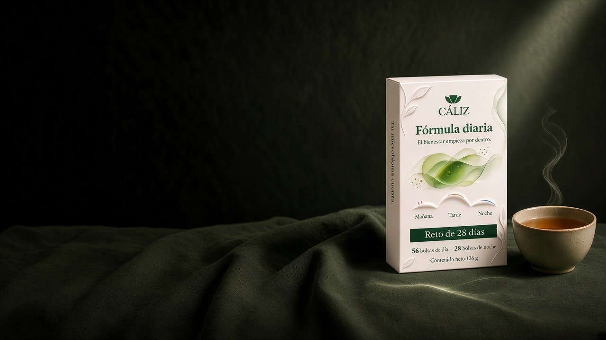
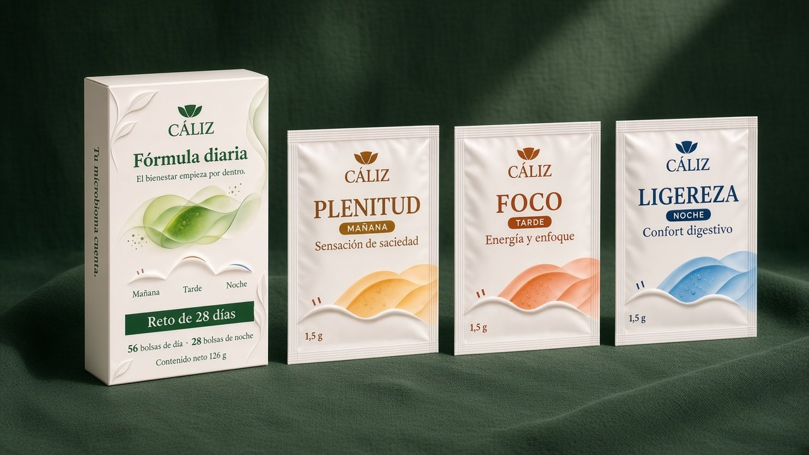
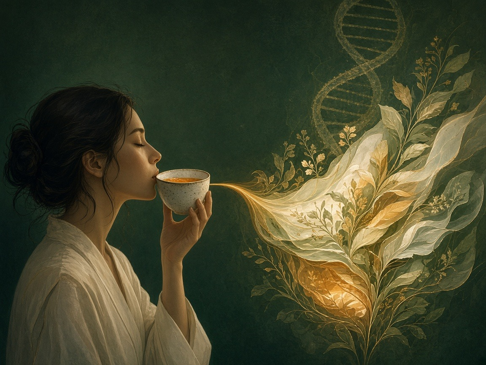

María Ruiz
La mañana empieza cuando sirvo Plenitud. Es el primer momento del ritual de 28 días.

Fórmula diaria
Una caja, tres infusiones para acompañar tu mañana, tu tarde y tu noche.

Una caja cerrada y tres infusiones: Plenitud por la mañana, Foco por la tarde y Ligereza por la noche.
Tu primera taza del día.
Día 1 reconoces Plenitud, Foco y Ligereza. Día 28 cierras el recorrido de mañana, tarde y noche, y eliges qué momento te gustaría mantener.
Ejemplo
Así se busca un ritual de infusiones: Plenitud por la mañana, Foco por la tarde y Ligereza por la noche, en la Fórmula diaria de Cáliz y su recorrido de 28 días.
María Ruiz
La mañana empieza cuando sirvo Plenitud. Es el primer momento del ritual de 28 días.
Pedro Martínez
A mitad del día dejo la taza de Foco, la infusión de la tarde, y sigo con lo que estaba haciendo.
Elena Vargas
La noche cierra con Ligereza. El día 28 miro qué momento del ritual me gustaría mantener.
De la primera taza de la mañana a la última de la noche, Cáliz propone tres momentos para hacer espacio en tu día.

El Reto de 28 días es el primer concepto de Cáliz, dentro de Fórmula diaria. Reúne una caja y tres infusiones para acompañar la mañana, la tarde y la noche.
Los 28 días marcan el inicio y el cierre del recorrido. No describen un resultado del cuerpo ni un plazo de efecto. Esta página muestra maquetas conceptuales. Los datos y los beneficios siguen por validar.
El kit de la demo es una caja cerrada con tres infusiones: Plenitud para la mañana, Foco para la tarde y Ligereza para la noche. Para explicar la estructura, el recorrido se reparte en 28 sobres de cada momento.
La maqueta imprime además 56 bolsas de día, 28 bolsas de noche, 84 sobres y 126 g de contenido neto. Esas cifras son de referencia y están marcadas como contenido ilustrativo. La cantidad real por referencia, el peso de cada sobre, la porción y el precio quedan pendientes de la ficha final.
Cada sobre se distingue por nombre, número, momento y color. Plenitud es el 01, en dorado, y corresponde a la mañana. Foco es el 02, en naranja, y corresponde a la tarde. Ligereza es el 03, en azul noche, y corresponde a la noche.
El color permite ubicarlos de un vistazo. El nombre y el momento también van escritos. Lo que la maqueta imprime como atributo sigue por validar.
El día 1 se abre la caja y se reconocen Plenitud, Foco y Ligereza, los sobres 01, 02 y 03. El día 28 se cierra el recorrido de mañana, tarde y noche, y se puede señalar qué momento gustaría mantener.
Eso cuenta la experiencia propuesta. No promete un cambio físico ni la formación de un hábito.
La preparación de cada infusión se publicará cuando esté lista su ficha final.
Los ingredientes, el gramaje y la porción también esperan esa ficha. Esta página no adelanta composición, cafeína, advertencias ni conservación.
Puedes marcar varias opciones a la vez: el kit completo y cualquiera de las infusiones. Cada selección empieza en uno y puedes cambiar la cantidad.
Al guardar, el resumen queda en este navegador, sin nombre y sin correo. Si ya habías elegido un producto, se conserva con cantidad 1.
Todavía no está a la venta. No hay precio, envío ni punto de compra. La página presenta el concepto.
Quien quiera dejar constancia puede usar el formulario del final. La preferencia queda en ese navegador.
Marca el kit, una infusión o varios. Cada selección empieza en 1. El resumen se guarda en este navegador, sin nombre y sin correo.